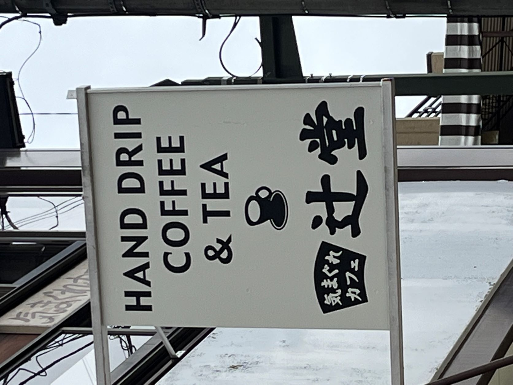
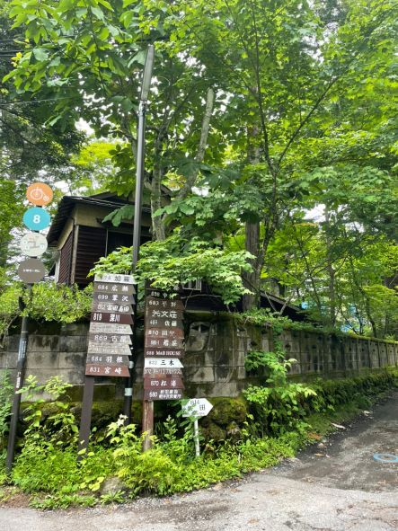
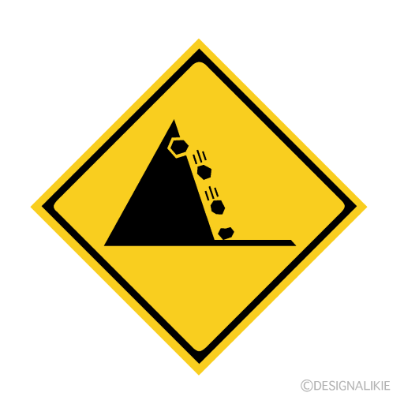

観察（看板・サインなど）
1.軽井沢の町中で

この写真は今年の夏休み中に旅行で軽井沢に行った時に自分が撮った写真です。
この写真をなぜとったかというと自分の住んでいるところの最寄り駅が「辻堂」で同じだったので撮りました。
自分のイメージが「辻堂」と言えば海に近く暖かいイメージですが、山の中にあり避暑地にこの「辻堂」という看板がありとても不思議に思いました。
2.別荘街で

この写真も今年の夏休みの期間に旅行で軽井沢に行った時に自分が撮った写真です。
軽井沢が別荘地で有名というのは知っていましたが、こんなにもわかりやすく別荘のある場所を記していいのかと思いました。
自分の住所が書いてあるようなものなのでお金持ちの感覚とは少しずれているとも感じました。
3.山道などで

この標識を見るたびに結構前から思っていることがあります。
山道などにあるこの標識がありますが、落石注意と書かれても運転中などにどのようにすればいいのかという疑問です。
この写真は家の近くになっかたのでインターネットからとったものです。
イラストイメージ